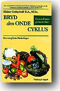

|
Opdateret 17 september 2011  Bogen ‘Breaking the Vicious Cycle’ udkom på dansk på forlaget Thaning & Appel den 22. april 1998 til en pris af 178 kroner, 200 sider, med titlen: ‘Bryd Den Onde Cyklus’. Den 1. februar 2006 meddelte Kroghs Forlag, at både den engelske og den danske version var udsolgt fra forlaget.
Klik på den lille skærm-firkant for neden til venstre for at få siderne op i fuld skærmstørrelse. Eller klik her Nyt fra Øster Snede 12. januar, 1998 I september 1997 deltog Lotte Wackerhagen i Mik Schacks radioprogram "Hjemmeservice" på P3 en lørdag eftermiddag, og ud over de mange henvendelser hun fik derefter, blev hun også kontaktet af Ugebladet Søndag, der har en journalist som lider af kronisk tarmbetændelse. Det mundede ud i, at journalist Arne Sorgenfrei fra Ugebladet Søndag tog ud og interviewede Lotte Wackerhagen, og der blev bragt en længere artikel om hende og Specifik Kulhydrat Diæten i Ugebladet Søndag nr 1, 1998, som udkom den 27. december 1997, under overskriften "92-årig læges diæt har gjort mig rask". Siden da har Lotte Wackerhagen fået 315 telefoniske henvendelser (dags dato) fra folk, som vil vide mere om bogen og om diæten. Hun har fået opringninger fra Island, Færøerne, Schweiz, Frankrig - ja enddog helt fra Iran, hvor man åbentbart også læser Ugebladet Søndag. Enkelte læger - fra Odense og Skive Hospital - har tilmed henvendt sig for at høre nærmere. (Hvis det er første gang du hører om bogen, så læs videre nedenfor. Her følger først en mail på engelsk om Lottes brev til Elaine...) KH Mik
Date: Sun, 11 Jan 1998 14:04:03 -0500 From: Rachel Turet <rachel@longisland.com> To: SCD-list@longisland.com Subject: from Elaine Dear All, Dear Elaine, Up til now 108 people have called. The latest call came from a woman at the University Hospital in Odense (the city where Hans Christian Anderson, the Danish fairytale writer was born). She was from the patient information center and wanted to buy the book to give to patients and their families.(this is direct quote) I feel, that you here in Denmark this way have got a quality mark. Congradulations. A man called me and told me that in 1995 he got a diet, which was similar to your diet, from a little hospital in the northern part of the peninsula Jylland, 300 km from here. He was not quite sure, but seemed to think that the diagnosis was ulcerative colitis.(again, a direct quote) He had other problems about intestines all over were chapping and bursting. He knew all about different alleric diseases with 3 allergy children, with different allergies. He just wanted to tell me that he was living better with help from the SCd from the internet and that he found it to be a fine idea to translate your book for sale in Denmark.
Tirsdag 15. juli, 1997 Jeg fik en interesant telefonopringning i dag fra Lotte Wackerhagen, som fortæller mig, at 1) hun har oversat hele bogen "Breaking the Vicious Cycle" til dansk, og at hun og Elaine Gottshall nu afventer svar fra Elaine's sagfører med hensyn til de tekniske detaljer vedrørende udgivelsen. Så bogen forventes at udkomme i Danmark - på dansk - inden længe. 2) at hun ved, hvordan man laver/skaffer ingredienserne til "Dry Curd Cottage Cheese" (tør hytteost). Selv skaffer hun den nødvendige osteløbe fra et mejeri i nærheden af hvor hun bor, og bruger 8 liter mælk for hver omgang, hun laver. Læs opskriften her 3) at hun indsamler opskrifter fra danskere til at blive inkluderet i den danske udgave af bogen, eftersom der er en del af de oprindelige opskrifter der "ikke passer til dansk smag", som hun udtrykker det. Læs et par stykker her: Lotte var indskrevet til at få bortopereret sin tyktarm, da hun hørte om Elaine Gottshalls bog. Nu har hun aflyst operationen, fordi diæten har vendt op og ned på sygdommen. Hun føler sig som et nyt menneske. Og en læge fra hospitalet har hjulpet hende med oversættelsen. Du er meget velkommen til at kontakte hende, siger hun. Lotte Wackerhagen Desagervej 6 Øster Snede 8723 Løsning Tlf 75 89 33 45 Fax 75 89 34 49 Nedenfor følger hendes egen historie - et indlæg i Colitis-Crohn Bladet:
En solstrålehistorie September, 1997 Colitis Ulcerosa siden forår 1989, i behandling fra maj 1990, syv år med op- og nedture. To gange på Prednisolonkur og godt resultat, to røntgenundersøgelser med kontrast, ellers Salozopyrin og nu Asacol. Fra marts 1996 nedtur. Tredje Prednisolunkur med ringe virkning. Fra efter 1996 ikke godt. Fra december 1996 vægttab på 1 kilo pr uge i 14 uger; 170 cm høj, 67 kilo ned til 53 kilo. Kontrol på sygehus sidst i januar 1997. Indstillet til coloskopi første gang i forløbet. Kunne ikke fuldføres på grund af tarmens og min dårlige tilstand. Røntgen med kontrast sidst i marts. Dårligt resultat. Konklusion: "Vi tilbyder dig en operativ fjernelse af tyktarmen." TAK, sagde jeg. Det var ikke længere til at udholde tarmens luner. Ventetid på forundersøgelse til operation fra midt i april til sidst i maj. Ny coloskopi. Fik gennemført. Resultat 14 dage senere: "Din kliniske tilstand og almene tilstand sammenlagt vil det være alt for drastisk en handling at fjerne tyktarmen. Lad os se tiden an." Og hvad var sket? Jeg havde fået fat i Elaine Gottschalls bog: "Breaking the Vicious Cycle", læste den, forstået den og fulgt diæten 100 procent fra 28. marts. Da jeg læste bogen, kunne jeg genkende mig selv mange steder og for at forstå rigtigt, begyndte jeg at håndskrive en oversættelse i en "kinabog". Men undervejs blev jeg opfordret/provokeret til at forsøge at udsende bogen på dansk. Mange faxer er sendt over Atlanten og der arbejdes nu stærkt på, om udgivelsen kan blive en realitet. Forfatteren er meget positiv, vel vidende at Danmark kun er et lille område. Hjælpen med diæten i bogen har i første omgang reddet min tyktarm. Jeg har det meget fint nu, selvom jeg stadigvæk er Colitis Ulcerosa patient. Diæten er kort beskrevet en udeladelse af de madvarer, en dårlig tarm ikke kan omsætte, nemlig: 1) laktose (mælkesukker i flydende mejeriprodukter + nogle oste), 2) raffineret sukker (rør og roe). Kun honning + sakkarin (hermesetas) tåles, 3) stivelse i rug, byg, havre, hvede + ikke-danske kornsorter som hirse, boghvede, m.m., ris, majs + alle sorter af kartofler. Ved udeladelse af disse fødevarer slap jeg af med ulidelige mavekramper, diarré, tarmblødninger, problemer med smerter i led, især meget dårlige hænder/fingre, hovedpine, der havde været en tro følgesvend i 12 år, på det seneste meget voldsomt om natten. Mit humør og mine kræfter vendte tilbage, trætheden forsvandt, og jeg "fik igen glød i øjnene", som venner og kolleger sagde. Min energi er nu meget stor. I hele forløbet har jeg fået støtte fra Vejle Sygehus, og jeg har til stadighed fået den sædvanlige medicin. Mit håb er, at denne bog kan udkomme på dansk, da jeg mener, at andre kan få glæde af den viden, der er stillet til rådighed i bogen. Lotte Wackerhagen Trykt i Colitis-Crohn Bladet nr 27, august 1997, side 13. Colitis-Crohn Bladet har adressen: Birkegade 11, 2200 København N Onsdag 24. november, 1999  Den nye bog "Fortsæt den gode cyklus" - en opfølger til bogen "Breaking the Vicious Cycle" - skrevet af Oscar Umahro Cadogan, udkom på forlaget Thaning & Appel den 12. november 1999 til en pris af 199 kroner. (196 sider). Den nye bog "Fortsæt den gode cyklus" - en opfølger til bogen "Breaking the Vicious Cycle" - skrevet af Oscar Umahro Cadogan, udkom på forlaget Thaning & Appel den 12. november 1999 til en pris af 199 kroner. (196 sider).(UDSOLGT fra forlaget per 1. februar 2006). Pressemeddelelse fra forlaget 5. november 1999 FORTSÆT DEN GODE CYKLUS af Oscar Umahro Cadogan Udkommer den 12. november 1999 Fortsæt den gode cyklus er først og fremmest ment som en opfølger til Bryd den onde cyklus, der bygger på den videnskabeligt anerkendte "Specifik kulhydratdiæt", men den tager også hensyn til de fødevareallergier og -intolerancer, mange mave-tarmpatienter ofte døjer med. Foruden gode råd om forskellige naturlige behandlingsformer indeholder bogen 80 spændende opskrifter på sund og 'ren' mad, der også vil kunne glæde raske mennesker, der bare ønsker ny inspiration i deres kost. Oscar Umahro Cadogan er med sine 22 år allerede en anerkendt kok. Han laver mad i TV2s Go'Morgen Danmark én gang om måneden, har været gæstekok på flere restau-ranter og er freelanceskribent for flere dagblade og magasiner, hvor han bidrager med sine opskrifter og skriver om ernæring, gastronomi, sundhed og sygdom. Oscar Umahro Cadogan rådgiver desuden kroniske mave-tarmpatienter i Århusområdet om kost og andre naturlige/holistiske behandlingsmuligheder, arbejder på at starte produktion af egne "meget rene" fødevarer og deltager som kostvejleder i brevkasse-panel for NetCafeen Mocca. I forbindelse med BogForum vil Oscar Umahro Cadogan levere brød til restauranten, og servere smagsprøver på forlagets stand (Stand 40), hvor der også vil være mulighed for at få en snak med forfatteren og få hans bog signeret. Med venlig hilsen Thaning & Appels Forlag Fortsæt den gode cyklus: 195 sider illustreret i farver, kr. 199,00 inkl. moms.
|